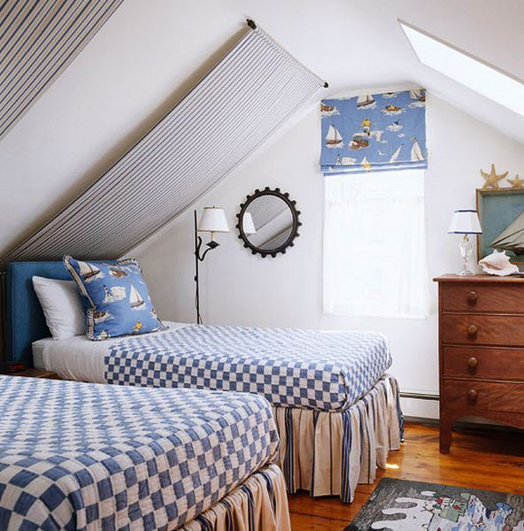

.png)
.PNG)
.PNG)
.PNG)
.PNG)
.PNG)
.JPG)
.JPG)
.PNG)
.PNG)


Well hello July! The height of summer is here. 🙂 Have you ever thought about where your dream location for celebrating the 4th of July would be? I have always wanted to spend it in one of two places, the first of which is Nantucket. (I’ll share the second place with you this weekend.) I thought it would be fun for the next couple of days to look at some homes done by one of my long time favorite interior designers…Gary McBournie. He has office locations in Boston, Nantucket, and Palm Beach, but it is his Nantucket styling that steals my heart every time.
I first fell in love with this bedroom in his own Nantucket home many years ago…sigh.
In fact, I think that blue plaid implanted itself in my brain and made me choose the fabric I did for our bedroom. (So much so that I am hearing the music from The Twilight Zone in my head.) If you are very observant, you will notice how he repeated a border of the plaid on the simple white drapes and a border of the bright blue on the hem of the bedskirt. Perfection.
There’s more blue and white loveliness in the guest bedroom from his old home.

He said that he does not use a lot of different patterns in a room like many designers, but he chooses instead to repeat his fabrics in different ways. Note a stripe for the canopy on that slanted ceiling and a stripe for the bedskirt – all punctuated by a small dose of that cute sailing print with the repeated blue.
Now don’t go thinking his whole cottage was done entirely in blue…
It’s definitely wasn’t. 🙂

I know…There are blue accents in this room with those beautiful blue plates, but the color plays second fiddle to the happy yellow.
And there is more yellow here although toned down some in its use…
Of course, I love his use of red and yellow, but my favorite thing is the yellow border on the skirts of the upholstered pieces. How smart is that?! I should also mention to you that he painted the shell watercolors there on the wall himself. Impressed? You bet.
Now all of these photos came from a Traditional Home magazine article on one of his earlier homes, but that house was also featured in this book if you are interested.
At Home in Nantucket (Amazon Affiliate link)
(Amazon Affiliate link)
I have been saying his old home, right? Which would make you think he has a newer one. Well he does! In fact, his most recent one was in the March, 2013 issue of House Beautiful.
When I first saw this photo, I thought, “Why, Gary McBournie has redecorated his old place in Nantucket!”
Similar layout…same sloped roof and all…colors that would have worked with the old one..but it wasn’t his old house. This is his new/old cottage in Nantucket. Would you like to see more of it?
I thought you would. 🙂
Are you loving that 19th century dresser as much as I am?? And did you notice the repeated print from the linens used as wallcovering? (Please don’t let me start liking wallpaper again.ever.)
He has gone with a softer color palette here in the living room…
Recognize the chairs with the contrasting hem? 🙂
He still has my favorite touches of red in this cottage as well. (The print of the drapes here reminds me of our master bath drapes…maybe more subliminal influencing?)
I am loving the continuity of the color palette throughout the house, with the colors taking turns at which one is dominant in the room. Do you see how he used the contrasting red border on the drapes in the dining room above to bring out that color from the fabric pattern? I love drapes with borders!
In the butler’s pantry he went really bold with the wallcovering.
(I will not like wallpaper. I will not like wallpaper.)
I love love love those upper cabinets, and would you look at the skirting detail!! (Hmmm…maybe I don’t need lower cabinet doors in the little kitchen in the room over the garage, right? 🙂 )
Red doesn’t make an appearance in his new/old kitchen because that palladian blue takes over here.
That little room has such an old fashioned feel to it!
So what do you think? Are you a fan of his rooms?
I’m afraid that’s all the Gary goodness I have for you today, but I will be back very soon with more. (His work is just too good to me to not show you this week! 🙂 )
Until next time…


.PNG)
I think I like the decor in his 1st house better, but if he could part with that coffee table in the second house, I would gladly take it off his hands! 😉 I too don’t want to do wallpaper again,even though I used to sell it! Too much work, and hubs won’t have it in our new house anyway, so I can always blame him! 😉
———————————————————————
I did too, Marianne. It had more of the colors that I love. Too funny about you and the coffee table. 🙂
I so agree with you about all the work with wallpaper (but you can go right ahead and blame your husband.)
Kelly
Hello Kelly, Hello July! I agree on the Nantucket style/décor. If money was no object those would be some key words in my directions to a decorator. (Too funny, I was going to mention that the living room was the cover of a book I have… it comes out in the spring as a coffee table accent. The pictures are so inspiring.)If I could choose anywhere to spend the summer months, well, Martha’s Vineyard, a few Cape locales, and Hilton Head, would be on my list. You know why I think I am attracted to this decorating style – it’s the fresh take on mixing the old family heirlooms or favorite pieces with other items one has accumulated. Gives a room a stylish yet comfy feel.
———————————————————————
I think you nailed it with the “stylish yet comfy feel” description Paula. That is exactly what it is, and achieving it by using some family pieces in it is an accomplishment and a half! That’s too funny about your coffee table book. 🙂
Kelly
Gosh, I wish I had the color confidence (well, and the talent and experience) that Gary has. It doesn’t look like he worries about “flow”, but somehow it still flows! He seems like he must be a kindred spirit to a lot of us, with his love of cozy spaces and details.
———————————————————————-
I think it all flows by the mix of colors. I don’t have the confidence in the mix of patterns that he has. His Nantucket houses certainly strike a chord with those of us that love traditional design infused with color and some modern twists here and there. 🙂
Kelly
Thank you for this big drool fest Kelly. Oh, how I would love to spend a 4th of July weekend in a coastal setting such as Nantucket. I will need to check this book out that you have featured, as I do not have this one. What a wonderful designer. I love that yellow kitchen, but my favorite room I would have to say is the first bedroom you posted. I want those patchwork pillows! P. S. I don’t hate wallpaper. I have to agree with Jill. So true, that it is always pretty until you have to take it down. Oh what a task! Your not thinking of wallpaper, are you??…Happy 4th Kelly.
Debra
———————————————————————
As much as I love that kitchen, I too love the blue bedroom the best. It has such wonderful elements from the fabrics to the floors to the windows and window treatments to the color. Just so much to adore!
No…not really thinking of wallpaper here. I keep entertaining the idea of grasscloth in a bathroom, but I am not sure that will work.
Have a happy 4th!
Kelly
Kelly,
I love so much of his style. I think I must have seen his work before. I’ve subscribed to Traditional Home forever. I love the first kitchen. The fireplace in the kitchen, oh my. What a comfortable feeling home he creates.
I can’t wait to see what you show us as your second favorite spot to celebrate the 4th.
xo,
Karen
————————————————————————
Karen, if you have subscribed to Traditional Home, then I know you have seen his work. It has been scattered between it and House Beautiful. Isn’t that kitchen wonderful?! I have always wanted a fireplace in a kitchen (at least I can SEE ours from the kitchen here. 🙂 )
Don’t get too excited about my second favorite spot…it has more to do with a person than the place. 🙂
Kelly
omg, I love these homes……I love wallpaper !!!!!!!!!!! THANK you so much for sharing these………you have an awesome taste in decorating !!
———————————————————————-
Goodness! Thank you Linda! I am happy you liked the rooms.
I have more of his rooms coming your way soon. Hope you will like them as well.
Kelly
Most wallpaper is beautiful…..until you have to take it down. I DO love that floral paper in his bedroom though. And that dresser….gorgeous!
———————————————————————-
I totally agree with you about the wallpaper! I think we all need a dresser like that one. 🙂
Kelly
Thank you for bringing me the warmth and light of a Nantucket morning!
Loving the wall of blue and white plates and the beautiful, old dresser. You have inspired me, Kelly, to get the picture hooks and furniture polish out. I have a very similar dresser in my bedroom…. But it doesn’t have that brilliant sheen!
I wish we had more window boxes here in Australia. They look so sweet. Probably a bit difficult to add onto my floor-length glass panes that line my outside walls, though!
Enjoy your sunny days!
————————————————————————
You are very welcome Therese. If you have a very similar dresser to the one in the post, I am jealous! That piece was simply gorgeous. I love windowboxes too, but I do think you would have a little trouble with it on floor length windows. 🙂
Kelly
Just perfect timing. I am thinking of a Nantucket/Boston trip this August. Sounds like a wonderful place to visit. Also I am redoing a bedroom and was needing some design for the window. I now know by these pictures what I am going to do. The color of the walls is actually the one like in the living room.
————————————————————————
Lucky you! I would love a Nantucket trip in August (but Boston traffic scares me to no end! :() I am glad the post could help give you a little inspiration for your bedroom. Have fun!
Kelly
GMcB has always been one of my favorites. No one does cottage better, because in his hands, it never looks cutesy.
Wallpaper? My mother hated it, and so I always said I hated it. Then in the 90s I wallpapered everything. In my present house, we wallpapered the DR because I found some in a Savannah antique shop I liked, and we used a paintable wall covering in the kitchen to camouflage bad drywall. It is there to stay, at least until the next people who live here don’t like it!
———————————————————————–
I had not thought about how he avoids cutesy, but you are right. That is why his rooms look classic.
It sounds like you have done a good job with your paper and that you won’t have to remove it. If I knew ours would be there to stay, I would go with it. (I am just tooooooo fickle!)
Kelly
Call me hopelessly old-fashioned and out of date, but I LOVE wallpaper! There I said it. Let the hissing commence. 🙂 Now, I don’t love all wallpaper or think it should be used in all rooms, but it can lend a certain charm and add some character to an otherwise boring room. And yes, I have pulled my share of the heinous stuff off of impossible walls… 🙂
I love Gary’s cozy homes with the angled ceilings and painted floors. I agree with Katrina–the exterior shot is gorgeous!
————————————————————————
Not going to hiss about your love of wallpaper. I think it is beautiful…I just know how frequently I changed my mind about the looks of our rooms when I was young and energetic…so I stripped waaaaaay too much to even want to think about going that route again. If I knew I would love it forever, I would put it up in a heartbeat…and I would really like some grasscloth in a couple of rooms here. I am just scared I will change my mind again!
Angled ceilings…aren’t those simply charming?!! And so is the exterior.
Kelly
I pinned the heck out of this post. Love it and Gary!
———————————————————————-
Thanks for spreading the blog love Laura! Glad you liked his rooms!
Kelly
Love these pictures! The simplicity of the exterior of his cottage is my favorite….weathered gray shingles,simple window boxes and a flag flapping in the breeze.
Wallpaper…how about hideous border..this time last year I was scrapping off wallpaper borders in my hallway, laundry room and 2 bathrooms that the previous owner thought was “cute”. I decided then that someone should have borders outlawed! That being said, believe it or not, I have actually seen some new simple wallpapers that I kinda’ like.
Keep enjoying your summer break!!!
————————————————————————
I think we will all take a gray shingled cottage like that one anyday, right?
Wallpaper borders….not fun. I feel sorry for you having to have done that. Yuck. So don’t you dare start looking at them and thinking that you like them. I am trying to save you future pain!
You’re welcome. 🙂
Kelly
Kelly,
I have always liked any design that makes me think I am near the water. Gary McBournie makes me think I am near the water when I look at his interior designs. Thanks for sharing his wonderful homes with us.
————————————————————————
Thank you for reading and commenting Dawn. You are so right about the rooms making you feel as if you were near the water. That is probably because he draws on New England/Nantucket style. I am right there with you loving that coastal influence!
Kelly
Thanks for sharing! Again we are like twins, enjoying the same thing.
Do we know the secret to using yellow with blue?
blue, red, yellow?
I find I always have problems with yellow paint and items, also can happen with reds if not a bright red.
Help!
———————————————————————–
I am afraid I don’t know a secret except to try out your paint sample in a space with similar lighting as the room you want it in…and stay away from yellows with green undertones. Those never work for me. I always try to use a light yellow in paint…it tends to magnify itself when it is on 4 walls. (And this is coming from someone who painted the exterior of our previous home yellow. 🙂 )
I have also had to have red custom mixed on a number of occasions because the samples are usually too pink.
Those colors can be tricky!(Perhaps that is why our entire home is painted in a nice neutral khaki now. 🙂 )
Kelly
Thanks for introducing me to my new favorite designer! I could spend eternity in every one of these rooms! Red and blue always seem to be my go-to colors, and although I adore a yellow room, I happen to look sickly whenever I’m near the color, so I try to avoid using it in my own home.
And as for wallpaper? We are totally in agreement there. Although I love it everywhere else, the 90’s burned me out of stripping that stuff off walls FOREVAHH!!!
Thanks for the great info. I’ll click on your links to see more!
————————————————————————–
You didn’t know about him?! Oh my gooooodness. So happy I could introduce him to you. You and I have the same taste in colors, and you sound exactly like my daughter who says that she can’t wear yellow either (and she is having RED highlights put in her hair as I type this. 🙁 )
I think everyone must have gone overboard with paper in the nineties. It will be the young and inexperienced who ressurrect the trend this time. It IS beautiful….but then again…maybe the manufacturers have drastically improved on their designs so that it takes nothing to remove it….hmmm. Nope. Not gonna do it. Stay away from wallpaper.
Kelly
I have always had an obsession with New England. I love the simple lines and clean colors and Windsor chairs and shingled cottages…..the list goes on and on. Gary McBournie is an amazing designer and I love every room of his homes. To me he epitomizes what good design is all about; rooms that are classic and not trendy, beautiful and functional, and will stand the test of time.
I will be looking at this post over and over.
If there is a shortage of glass jars it will be your fault. I have cleaned out the local Target and Walmart and I am sure I am not the only one who has become a glass jar fanatic after seeing all of your wonderful ways to incorporate them into home decorating.
Have a wonderful 4th!!
p.s.I have a love/hate relationship with wallpaper
——————————————————————-
Me too! It’s the shingled cottages that get me everytime Martha. And I agree with you that GMcB’s rooms are classics. I am so glad you enjoyed the post!
Now don’t you go and buy up all the jars. I might still need one or two for that room over the garage. 🙂
Wallpaper…I loved it years ago, but I stripped so much of it I have to tell myself to stay away from it. Otherwise I will be going into that dangerous territory again.
Kelly
I think I have finally found what “my style” is— just love all the fresh blue/white, cool, crisp looking Nantucket design! My daughter flew into Nantucket for a job interview and when she came back she said ” Mom, I found the perfect place for you– and you would love Nantucket!!” I have never been there but now I think this may be ” my Heaven on earth!!” I just showed my husband the window treatments in the first picture and said ” that’s it– I’m measuring the windows for the shades and sheers”! He just rolled his eyes again!! But I do think it would be perfect for our lake front home. Thank you, Kelly– you have truly led the way in my remodeling and helped me pull together ” my style”!
——————————————————————–
Nantucket style…isn’t it beautiful? I love the window treatments in that blue bedroom…thought about doing that with our windows for years. I hope you get to use the idea in your lakehouse Louvina. It would look great!
Hope your leg has healed so that you can enjoy all the fun of summer now.
Kelly
I feel the same way about wallpaper; but, oh, the pull towards it is so very strong!! Help me fight it!! Sally
———————————————————————–
I think it is beautiful, and for many years I papered, stripped, and repapered rooms over and over again. I just know how much work it is (and how often I change my mind!) So I do not want to go down that path again. 🙂
I will help you fight it Sally. LOL
Kelly
Oh we love the same designers!!!…I am swooning over his rooms and have to get that book!…thanks for the inspiration and reminding me how much I love this designer!!!
Love that yellow kitchen!
———————————————————————-
Yes, we do Shirley! Wait until the next post…he has his own book. I love that yellow kitchen too. It looks like just the most cheerful place to enjoy a big breakfast! How could anyone be grumpy in a room like that? 🙂
Kelly